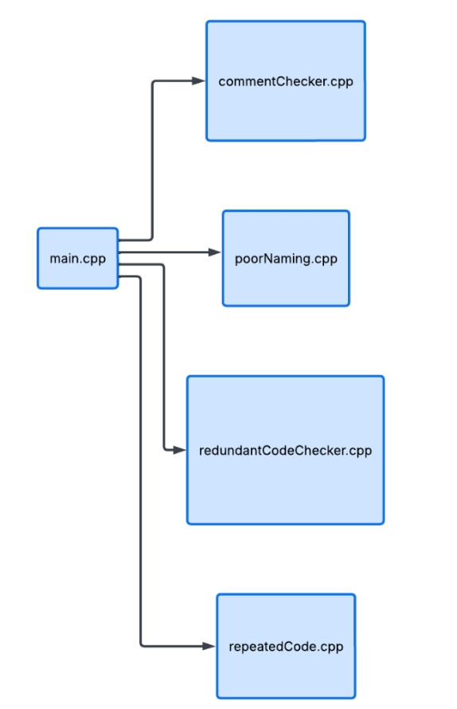

CS179K Code Smell Project
System Architecture

Inferences of Modules
repeated.cpp
- stripBlockComment() - detects and removes blocked comments
- stripLineComment() - detects and removes single line comments
- normalizeWhiteSpace() - deletes whitespace to prevent false negatives
- extractCodeLines() - using the cleaned code regex, return the vector containing the lines of code
- reportRepeatedBlock() - from the extracted code lines, check for repeated blocks. If found, emit the warning message.
commentChecker.cpp
- functionFinder() - finds functions in the source code file
- commentFinder() - finds comments in a section of the source code file (use case will be within the function)
redundantCode.cpp
- splitIntoFunctionBodies() - finds functions in the source code file and isolates each function's body (so variables in different functions aren't mixed up with each other)
- stripComments() - removes // and /* */ comments before analysis, so commented-out code doesn't produce false declarations or false usages
- findDeclarations() - finds variable declaration statements within a function body (e.g. int x;, int x = 5;, int a, b;) and extracts each declared variable's name and line number
- countUsages() - counts how many times a given variable name appears as a whole word within a function body, used to determine whether a declared variable is ever referenced again
- buildTypePattern() - builds the regex pattern used by findDeclarations() to recognize supported type keywords (int, float, bool, etc.) at the start of a declaration
poorNaming.cpp
- searchVariableNames() - searches for all variable names found in the source code. Returns all of the found variables
- isPoor() - Accepts a string and determines whether the string is poor or not. It will return an empty list if not poor, or a list of recommendations if it is poor.
API's and Their Usage
- Regex - used to identify relevant structures in the source file
- Fstream - enables our input to be a C++ source file
- Vector - data structure to store lines of code that are candidates for smelly code detection
- String - used to store the actual regex
Algorithms and Optimizations
- Parallelism - Once the source code is read, run each detector in parallel to improve speed instead of running the detectors sequentially.
- Hashmaps - instead of using pairwise comparison, we use a hashmap to check for cases such as repetitions.
- Single compilation for regex - Any regex objects used are declared as static. This enables it to be compiled just once during the first call.
- Memorization - Lines of code are stored into a data structure to prevent re-reading.
- Single-read files - An entire input file is converted into one string and read once using rdBuf().